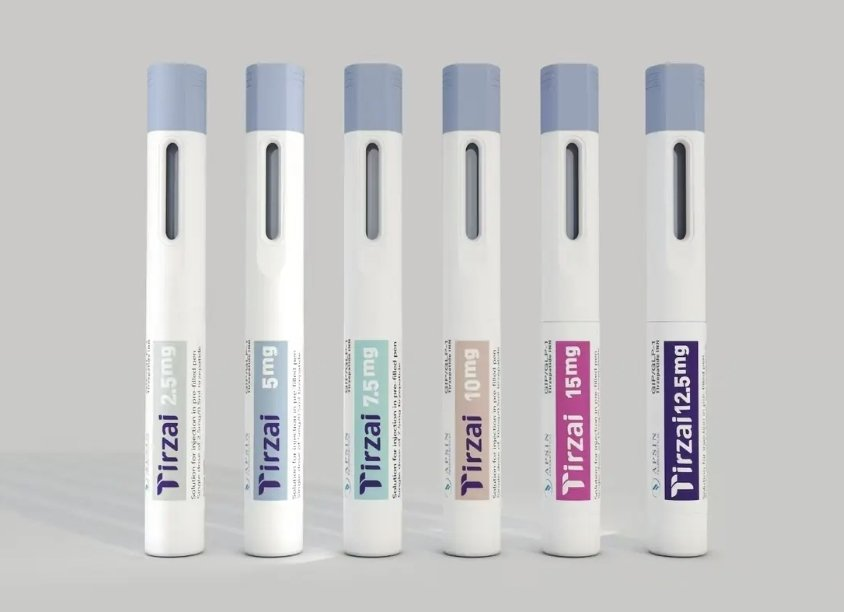

【如何使用度拉糖肽/替西帕肽注射笔-哔哩哔哩】
https://t.co/j1xv5rLpjQ


现有两种替西帕肽（减肥药）在售
新品 自动笔式替西帕肽 Tirzai
剂量 2.5 5 7.5 10 12.5 15
价格 320 360 410 450 490 530
免去学习注射的烦恼
经典 注射针式替西帕肽 Tizaro
剂量 2.5 5 7.5 10
价格 280 330 380 430
性价比高，注射易学
另有口服司美格鲁肽 7mg*10 175元 https://t.co/c1I6rJ2sSW
新品 自动笔式替西帕肽 Tirzai
剂量 2.5 5 7.5 10 12.5 15
价格 320 360 410 450 490 530
免去学习注射的烦恼
经典 注射针式替西帕肽 Tizaro
剂量 2.5 5 7.5 10
价格 280 330 380 430
性价比高，注射易学
另有口服司美格鲁肽 7mg*10 175元 https://t.co/c1I6rJ2sSW